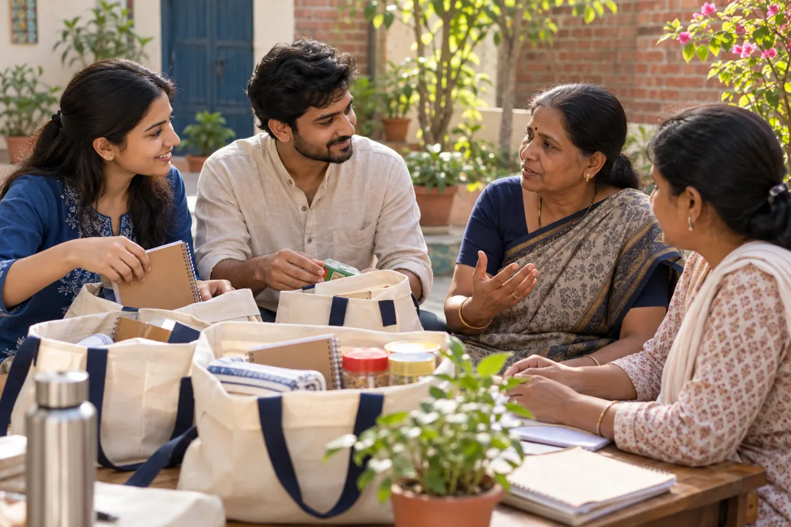

Our focus / 01
Education
Foundational literacy, supportive learning environments and educational materials — helping children build confidence, curiosity and opportunity.
Learn about education ↗A world of possibility begins when every child has the chance to learn, and every person is treated with dignity. We're shaping a community-first initiative built on education and social welfare.
“Education opens doors. Compassion helps people walk through them.”
Karunvaya Foundation · Our beliefKarunvaya Foundation is being shaped around these two inseparable ideas. Our first chapter focuses on practical learning support for children and thoughtful, needs-led social welfare for communities. We intend to listen first, act responsibly, and measure what truly matters.
Our beginning is intentional: focused programmes, meaningful relationships, and the patience to do things well.
Foundational literacy, supportive learning environments and educational materials — helping children build confidence, curiosity and opportunity.
Learn about education ↗
Respectful outreach, essential supplies, welfare guidance and community partnership — support that protects dignity and responds to real needs.
Learn about social welfare ↗Programmes are currently in planning. Dates, locations and beneficiary numbers have not yet been announced.
Two focused areas as we begin, designed with community feedback and responsible record-keeping.
Community learning sessions, reading practice, school-material support and educational guidance for children.
Needs-led support for vulnerable families such as essential supplies, service referrals and community assistance.
Informed consent, child safeguarding, protected personal information and publishing only verified updates.
You don't need a grand gesture to make a difference. Your time, your skills and your willingness to care can help shape something meaningful.
Learn about future volunteering ↗Understand what children, families and communities actually need — without assumptions.
Build achievable programmes with volunteers, local educators and community partners.
Document activities responsibly, protect personal information and refine what works.
We're in our formation stage. Rather than publish unverified impact numbers, we're sharing the steps we plan to take.
Establish governance, safeguards, registration and trusted communication channels.
Work with a local community to plan an education pilot and identify welfare priorities.
Publish real progress, honest challenges and transparent programme updates.
Karunvaya Foundation is in its formation stage. We are preparing legal, safeguarding and communication processes before inviting formal volunteering or financial contributions.
Donations are not being accepted through this website. Official contact information, application forms and verified schedules will be published when ready.
Back to top ↑This static pre-launch website has no submission forms, cookies, analytics or payment processing. If we introduce those features later, we will publish suitable policies and data-handling details. Our organization name is a proposed identity; registration status must be confirmed before launch.
This is a pre-launch website for a proposed initiative. We will publish verified registration and legal details after incorporation and verification.
Not yet. No payment details or donation gateway are provided while the necessary legal and banking arrangements are being completed.
Visit our volunteer page to learn about planned opportunities. Formal applications will open after safety, communication, and programme processes are in place.
We intend to begin with a local community pilot in India. Locations and schedules will be confirmed publicly before activities begin.